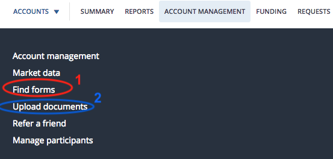

DIY Canadian: How-To Guides for Canadians
DIY Canadian: How-To Guides for Canadians *Note: the information below has been updated for 2018 (last update: March 2018)
*Keep in mind that the investment strategy used for non-registered accounts is very similar (but slightly different) to that of a RRSP (so the webpage for RRSP investing is very similar)
Q: What is a 'non-registered' investment account?
Another term for a non-registered account is a 'taxable' account. Non-registered investment accounts offer no special tax advantages like registered accounts do (e.g. RRSP, TFSA, RESP, etc.). Gains made on ETFs/stocks/mutual funds will be subject to a capital gains tax, which only occurs when you sell your investments for a gain (profit). This capital gains tax is based on your marginal income tax rate (tax bracket you are in) and is applied to only 50% (half) of the gains on your investments.
Q: Should the investments that I hold in a non-registered (taxable) account be any different than the ones that I hold in a RRSP/TFSA account?
Great question! The answer is yes and no. I hold the same funds in my non-registered (taxable) account as I do for my RRSP. However, I do not hold the same funds in my TFSA. Here are the reasons why:
- US-listed foreign equity ETFs (Exchange-Traded Funds) directly owned by your RRSP such as VTI and VXUS (as opposed to Canadian-listed ETFs such as XUU) should definitely be used in a RRSP since it offers tax advantages. This is because there is an agreement between the U.S. government and Canada that exempts investments in RRSPs from the usual 15% foreign withholding tax on dividends earned. This agreement does not exempt TFSAs or non-registered accounts from the 15% witholding tax on dividends. However, with US-listed ETFs, the US withholding tax is recoverable (meaning the tax is refunded) in a non-registered account. Exempting and recovering the withholding tax can be treated as essentially the same (not a significant difference in benefit). To recover the withholding tax paid, you will need your T3 or T5 slip that indicates the amount of foreign tax paid and then claiming the foreign tax credit on Line 405 of your tax returns. This tax credit will decrease your income tax bill by the exact amount you paid in withholding taxes. Since you can't recover the US witholding tax in a TFSA (since tax slips are not issued for dividends received in a registered account), US-listed ETFs aren't as advantageous in TFSAs although this does not necessarily mean they are worse than Canadian-listed ETFs in a TFSA (rather there's just less reason to use them since they make things a bit more complicated; see Norbert's Gambit for currency conversion as an example of this additional complexity).
- The 15% withholding tax paid on foreign equity TD e-Series funds is recoverable (not exempt like in a RRSP) in a non-registered (taxable) account and so it is more tax advantageous to hold foreign equity TD e-Series funds in a non-registered account rather than a TFSA (in which the 15% withholding tax is not exempted or recoverable). However, ETFs are by far the better choice as an investment vehicle in the long-term.
Q: Which ETFs do you recommend for a non-registered (taxable) account?
I recommend a 3 ETF portfolio for your non-registered (taxable) account. I also use this 3 ETF portfolio in my RRSP account as explained on this webpage (since RRSPs are exempt from the 15% foreign witholding tax and I am comfortable with Norbert's Gambit) with a slightly different allocation to the US (5% more) and Canadian ETFs (5% less). *Note: I technically hold 4 ETFs in my non-registered account since I have two Canadian index ETFs (VCN and ZCN) because I wanted to diversify my ETF providers, but it is really only necessary to hold one of these funds (both have the same MER so it's really a coin flip). This 3 ETF portfolio includes exposure to U.S. (VTI), Canadian (VCN or ZCN) and International (VXUS) markets.
- Vanguard Total Stock Market Index ETF, VTI (50% of portfolio) *MER = 0.04%
- Vanguard Total International Stock ETF, VXUS (30% of portfolio) *MER = 0.11%
- Choose One Of: Vanguard FTSE Canada All Cap ETF, VCN.TO (20% of portfolio) *MER = 0.06% OR BMO S&P/TSX Capped Composite Index ETF, ZCN.TO (20% of portfolio) *MER = 0.06%
*personally, I would also sign up for a DRIP (Divident Reinvestment Plan) for each ETF (you'll have to make sure you list all 3 ETFs on the DRIP Authorization Form if you follow my portfolio) once you have purchased the ETFs. This will automatically reinvest any dividends earned through your investments (IF the dividend is large enough to purchase whole shares, otherwise, extra cash will be deposited into your account) so that you keep more of your money in the market and avoid trading commissions (ECN fees). If you don't sign up for a DRIP, your dividends will always be deposited into your account as cash and so they won't have a chance to earn more money in the market until you manually buy additional investments with the money.
There are no fees to set-up or maintain the DRIP service at Questrade.
Q: Alright, I want to sign up for a DRIP for each of my ETFs. How do I do that?
You can't sign up for a DRIP until you own at least one share or unit of the investment you want to DRIP.
As soon as you purchase an ETF, you can enroll for a DRIP while logged into your account. However, I would recommend that you wait until you have purchased all of the ETFs that you are planning on buying so that you only have to fill the form out once for all of them.
Follow these steps to enroll in a DRIP for each ETF (click this link for the official Questrade steps):
- Complete the Dividend Reinvestment Plan (DRIP) Authorization Form online. You will have to download this from Questrade. You can download it by clicking this link OR you can login to your Questrade account, click on the 'Account Management' tab at the top of the webpage, then click on 'Find forms' (shown circled in red in the picture below), then click on 'Dividend reinvestment plan (DRIP) authorization'.

- Print the form so you can sign and date it
- Scan the form and then upload it to Questrade. To do this, login to your Questrade account. Click on the 'Account Management' tab at the top of the webpage, then click on 'Upload documents' (shown circled in blue in the picture above). Select the account, name the document 'DRIP Authorization Form', select the document type (Dividend Purchase Plan Authorization) and then click 'Browse' to attach your scanned form. Make sure the file size is under 4MB and the file type is one of pdf, png, jpg, jpeg, tif or tiff. *Save this form on your computer (as you will not be able to access the uploaded copy). Finally, click 'Upload'. You're done!
- To check if your stocks have been enrolled, review your submission of the form on myQuestrade. If the form says "accepted", your stocks are now enrolled in DRIP.
Once you are signed up for the DRIP for an ETF, you will not have to do so again if you buy more units of that ETF.
If you sell the ETF in its entirety (so all units), your DRIP is automatically cancelled.